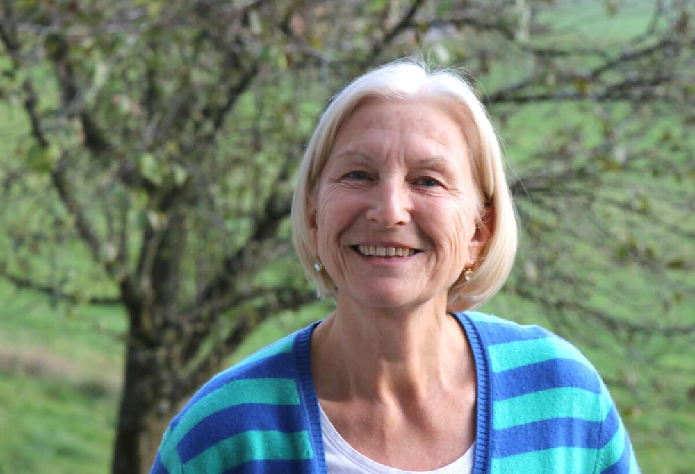
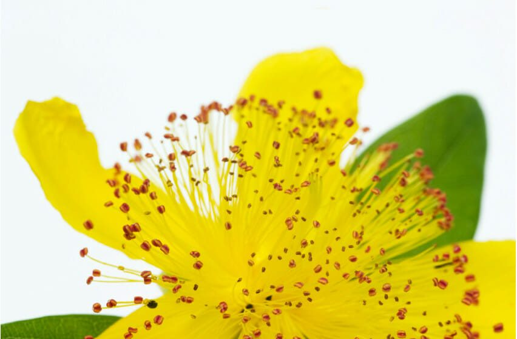

Dr. Barbara Tilmann
Schule der Entfaltung und Studium der integralen Wegbegleitung. Intensive Seminare, ritualgestütztes Naturcoaching und kontemplative Kommunikationstherapie in Oberbayern.
-
Präsenzstudium für integrales Naturcoaching
Das auf drei Jahre angelegte Studium für integrale Wegbegleitung ermöglicht Dir, anderen Menschen ein ritualgestütztes Naturcoaching und effektives Resilienztraining zu geben. Es verbindet zwei philosophische Betrachtungssysteme aus sehr unterschiedlichen Kulturen: das ganzheitliche Wachstumsyoga und die Naturvölkerphilosophie der nordamerikanischen Natives.
-

Schule der Entfaltung
Erforschung und Vertiefung der eigenen Regulations- und Transformationskraft. Resilienztraining, Naturcoaching und Verbesserung der Beziehungsfähigkeit — auf verschiedenen Wegen sich selbst und den Sinn des Lebens finden, um Klarheit und Fülle ins eigene Leben und in die Beziehungen zu bringen.
-

Kontemplative Kommunikationstherapie
Sich selbst begegnen im Kontakt mit anderen, Klärung und Befreiung des Geistes, das Menschsein begreifen, die eigenen Ressourcen erkunden und ausschöpfen — ganzheitliche Wegbegleitung durch den „Sturm“ des Lebens.
-
Eine Auszeit nehmen
Gesund werden durch Erholung. Sprechstunde in der Praxis: individuelle ärztliche Arbeit mit ganzheitlichem und schamanistischem Hintergrund. Zur Ruhe kommen, aussteigen, regenerieren und heilen, den Geist klären.
Warum?
Sehr früh in meinem Leben gelangte ich zu der Erkenntnis und zur Überzeugung, dass der Lebenssinn für den Menschen darin besteht, sich von Leid zu befreien, um gesund und schöpferisch sein Leben in Balance, Fülle, Liebe und Schönheit mit Respekt vor sich selbst und anderen zu gestalten. In diesem Kontext habe ich herausgefunden, dass ich zutiefst auf naturgegebene Regulationskräfte vertrauen kann und dass sich diese immer bewahrheiten. Deshalb glaube ich auch daran, dass jeder Mensch dazu in der Lage ist, diese natürliche Gegebenheit in sich zu entdecken und sich selbst heilen zu können.
Wie?
In diesem Bewusstsein lebe und erschaffe ich jeden Tag aufs Neue den Raum für heilsame und wachstumsfördernde Begegnungen. Diese gestalte ich als Mensch, als Ärztin und Kunstpädagogin, aus meinem Sein als Mutter und Großmutter mit Reife und einem ganzheitlichen Wissensschatz, der über fast fünf Jahrzehnte gewachsen ist — in Akupunktur, klassischer Homöopathie, körperzentrierter Bewusstseinsarbeit und in schamanistischer und yogischer Ausbildung über viele Jahre. Mittlerweile teile ich als Dozentin für WachstumsYoga und MedizinradWissen, ritualgestützte Entwicklungs- und Prozessbegleitung, Ritualberaterin und Autorin diese Kenntnisse mit anderen.